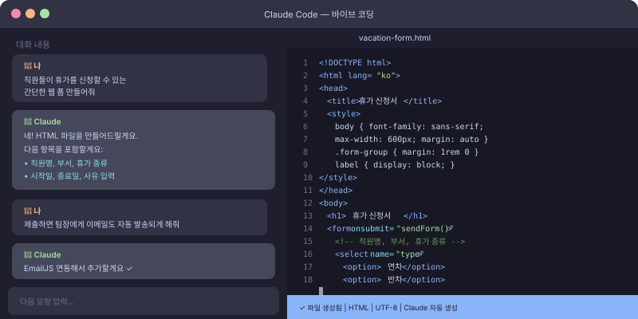

💻 "코딩은 개발자만 하는 거 아닌가요?"
예전에는 그랬어요. 코딩을 하려면 프로그래밍 언어를 배우고, 개발 환경을 설정하고, 수많은 오류와 씨름해야 했죠.
하지만 이제는 달라졌어요. 바이브 코딩(Vibe Coding)은 "어떤 걸 만들고 싶다"는 아이디어를 AI에게 말하면, AI가 코드를 짜주고 실행까지 도와주는 새로운 방식의 개발이에요. 코딩 지식이 없어도 간단한 도구를 직접 만들 수 있습니다.
🛠️ Claude Code란?
Claude Code는 Anthropic에서 만든 AI 코딩 도구예요. VS Code라는 개발자용 에디터에 설치하거나, 터미널(명령어 입력창)에서 사용할 수 있는데, 이 강의에서는 가장 쉬운 방법으로 시작해볼게요.
비개발자를 위한 가장 쉬운 시작 방법
직접 코딩 도구를 설치하지 않고도, Claude.ai 웹사이트에서 바로 코딩 관련 도움을 받을 수 있어요. 아래 예시들을 보시면 어떤 것들이 가능한지 감이 오실 거예요.
📋 바이브 코딩으로 만들 수 있는 것들
📊 자동화 스크립트
엑셀 파일을 자동으로 정리하거나, 반복 작업을 자동화하는 스크립트
🌐 간단한 웹페이지
팀 소개 페이지, 이벤트 안내 페이지, 간단한 폼(양식) 페이지
📱 간단한 앱
할 일 목록, 시간 추적, 간단한 계산기, 체크리스트 앱
🔄 데이터 처리
CSV 파일 변환, 여러 파일 합치기, 형식 통일하기
🎯 Step 1. Claude.ai에서 첫 코딩 요청해보기
먼저 Claude.ai 웹사이트에서 아래 예시를 그대로 따라해보세요.
"팀 소개 웹페이지 HTML 파일을 만들어줘.
- 회사 이름: 우리 팀
- 팀원 소개 섹션 (이름, 역할, 소개 3줄씩)
- 연락처 섹션
- 보라색과 흰색 컬러 테마, 깔끔한 디자인
- 코드를 바로 복사해서 쓸 수 있게 완전한 파일로 줘"

🚀 Step 2. 받은 코드 실제로 사용하기
HTML 파일 실행하기 (코딩 지식 불필요)
- Claude가 준 코드를 복사
- 메모장(Windows) 또는 텍스트 편집기 열기
- 코드 붙여넣기
- 파일명을
index.html로 저장 - 저장한 파일을 더블클릭 → 크롬 브라우저에서 열림!
🛠️ Step 3. Claude Code 앱 설치하기 (선택 심화)
더 복잡한 프로젝트를 진행하고 싶다면 Claude Code를 직접 설치할 수 있어요. 하지만 이건 선택사항이에요. 대부분의 비개발자분들은 Claude.ai 웹사이트로도 충분해요.
- VS Code 설치: Visual Studio Code 공식 사이트에서 다운로드 (무료)
- Claude Code 확장 프로그램: VS Code 마켓플레이스에서 "Claude" 검색 후 설치
- API 키 설정: Claude.ai에서 API 키 발급 후 설정
- 대화하듯 코딩 시작: VS Code 안에서 Claude에게 요청
💡 바이브 코딩 성공 팁
- 작게 시작하세요: 처음에는 간단한 것 하나부터. 욕심내서 복잡한 걸 만들려다 막히면 포기하게 돼요
- 원하는 걸 구체적으로 설명하세요: "앱 만들어줘"보다 "이런 기능을 하는 앱 만들어줘"가 훨씬 좋아요
- 오류를 두려워하지 마세요: 오류 메시지가 나오면 그대로 Claude에게 보내면 돼요
- 단계적으로 요청하세요: 한 번에 모든 기능을 요청하기보다 기본 → 추가 기능 순서로